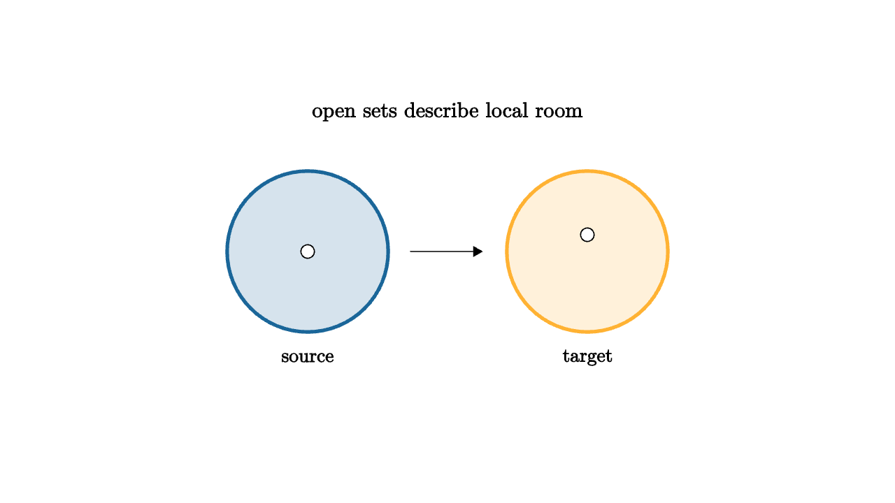

Open Sets, Loops, and the First Algebraic Shadow
Topology starts with a humble question: what does it mean for two points to be near when distance is the wrong tool? In the plane, distance is convenient. Many useful spaces arrive without a built-in ruler. A circle, a graph of possible robot arm positions, a collection of probability distributions, or a space of shapes may have points that vary continuously even when the right notion of distance is awkward.
The point-set answer is an open set. Instead of declaring distances, we declare which regions are roomy enough to contain their nearby points. A function is continuous when the inverse image of every open set is open. That sentence can sound dry, but it captures a flexible idea: continuous maps preserve tests of local visibility. If a target region can be detected by staying inside a small neighborhood, then its source should also be detectable that way.

source
let soft = |col| alpha{0.18} col
mesh scene = [
center{1.25u} Text("open sets describe local room", 0.68),
fill{soft(BLUE)} stroke{BLUE, 3} center{1.25l} Circle(0.72),
fill{soft(ORANGE)} stroke{ORANGE, 3} center{1.25r} Circle(0.72),
stroke{WHITE, 3} Arrow(0.35l, 0.35r),
center{1.25l + 0.95d} Text("source", 0.62),
center{1.25r + 0.95d} Text("target", 0.62),
center{1.25l} fill{WHITE} Circle(0.06),
center{1.25r + 0.15u} fill{WHITE} Circle(0.06)
]That local language matters, but it does not yet explain why a circle differs from a line. Around any tiny point, both look like a short interval. The interesting difference is global. A loop on a line can be tightened to a point without tearing. A loop that winds once around a circle cannot. The first algebraic shadow of a space records that difference.
The bridge is homotopy. Two paths are homotopic when one can be continuously deformed into the other while keeping endpoints fixed. A loop based at a point begins and ends there. We multiply loops by walking the first and then the second. The identity is the loop that stays still. The inverse is the same loop walked backward. After grouping loops by homotopy, these operations form a group called the fundamental group.
For the circle, the fundamental group is the integers. A loop has a winding number. Walk once counterclockwise and you get 1. Walk twice and you get 2. Reverse direction and you get -1. A loop that wiggles forward and backward without net winding represents 0. Algebra has entered because topology asked for a durable label.
source
let CircleLoop = |r, col| stroke{col, 5} Circle(r)
let Winding = |t| [
stroke{LIGHT_GRAY, 2} Circle(0.8),
center{[0.8, 0, 0]} fill{WHITE} Circle(0.07),
center{[0.8, -0.28, 0]} Text("base", 0.62),
rotate{t * TAU} CircleLoop(0.78 + 0.12 * t, keyframe_lerp([0 -> BLUE, 0.5 -> TEAL, 1 -> ORANGE], t))
]
"Local View"
mesh title = center{1.35u} Text("a loop remembers winding", 0.68)
mesh base = Winding(0.25)
mesh note = center{1.28d} Text("integer shadow: 0, 1, 2, and on", 0.62)
play Fade(0.7)
play Write(0.7)
"Wind"
base = Winding(1)
play Lerp(1.2)
note = center{1.28d} Text("homotopy keeps the net winding", 0.62)
play Trans(0.6)Why group laws? Because the operation of doing one loop after another is natural. The basepoint is a small technical anchor, and in a path-connected space the choice usually changes the presentation more than the information. What matters is that a space can now produce an algebraic object, and continuous maps produce homomorphisms between those objects. This is the real habit of algebraic topology: spaces become sources of structured algebra, and geometric motion must respect that structure.
Applications appear quickly. A complex-valued function with no zeros on a boundary curve has a winding number around the origin, which helps count roots inside the curve. A robot configuration space with holes can trap motion plans into different loop classes. In data analysis, loops in a point cloud can signal circular organization in noisy measurements. The details vary, but the pattern stays: global shape leaves algebraic evidence.
Point-set topology gives the grammar. Open sets, continuity, compactness, connectedness, and quotient spaces tell us when deformations are legitimate. Algebraic topology adds measurement. A loop that cannot be collapsed is no longer merely a picture. It is an element of a group.
The important shift is to use local topology to certify global invariants. A continuous deformation may bend, stretch, and wobble a path, yet winding number stays fixed unless the path crosses the hole. That single fact is already a theorem-shaped idea: topology permits motion, algebra records what motion cannot erase.